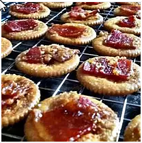

Back
Bacon Crackers Recipe

Homestyle Bacon Crackers
These sweet, crisp bacon and cracker treats are simple to make and outrageously delicious!
Ingredients
- 1 (16 ounce) package buttery round crackers
- 1 pound sliced bacon, cut into thirds
- 1 pound brown sugar
Directions
- Step 1 Preheat oven to 250 degrees F (120 degrees C).
- Step 2 Arrange the crackers in a single layer on a large baking sheet. Top each cracker with 1/3 slice bacon, and sprinkle desired amount of brown sugar over all.
- Step 3 Bake 1 hour in the preheated oven, or until browned and crisp. Serve warm.